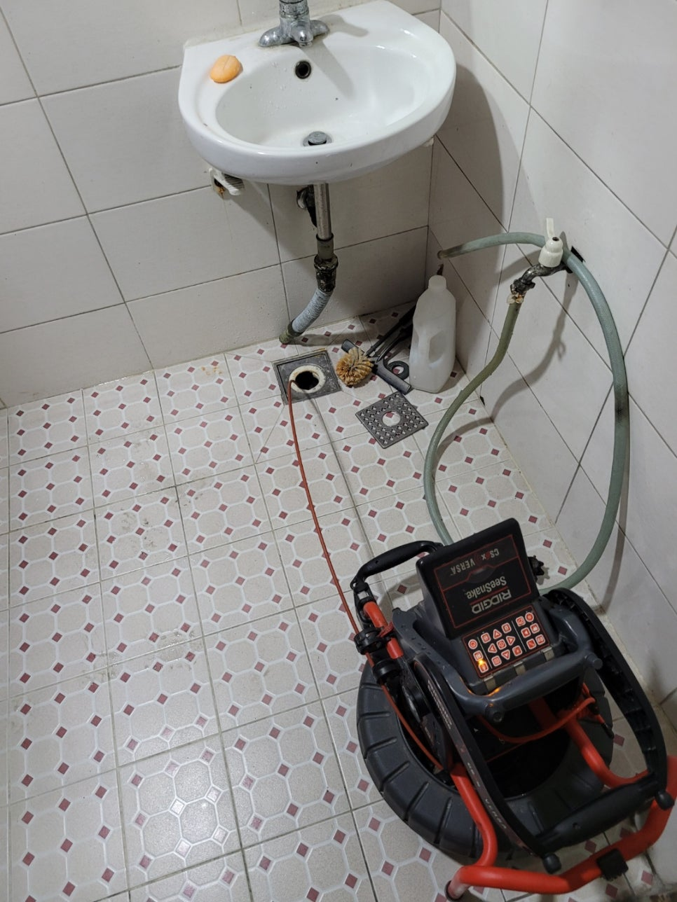
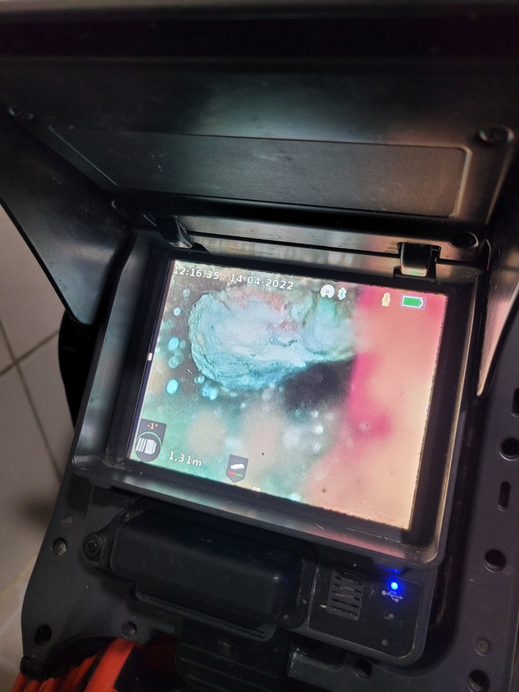
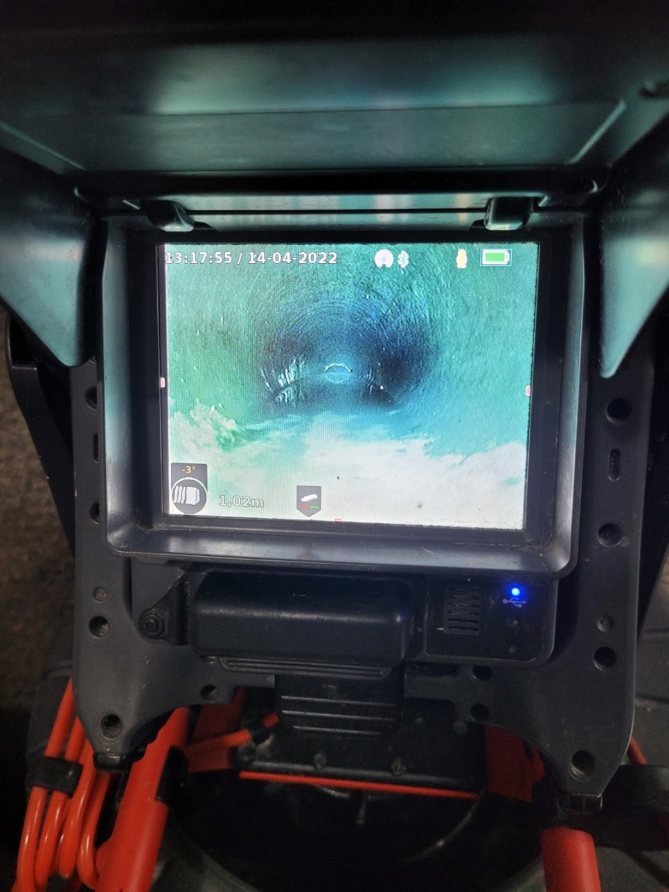
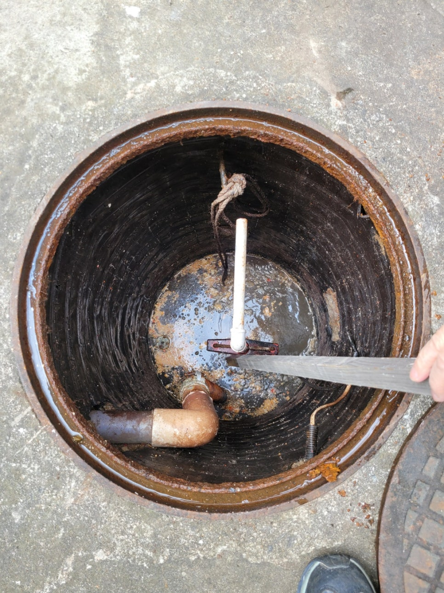
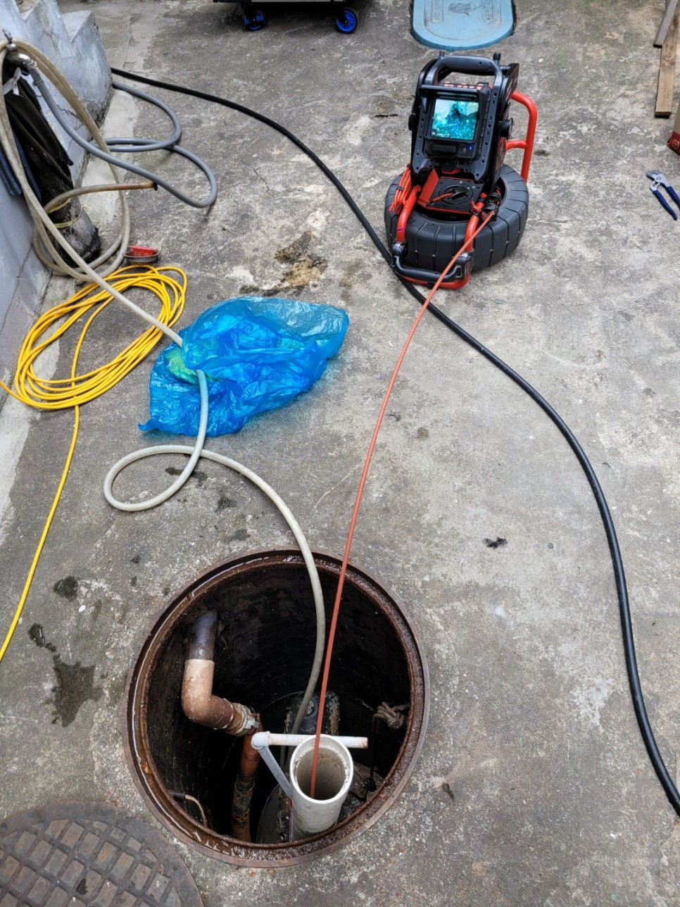
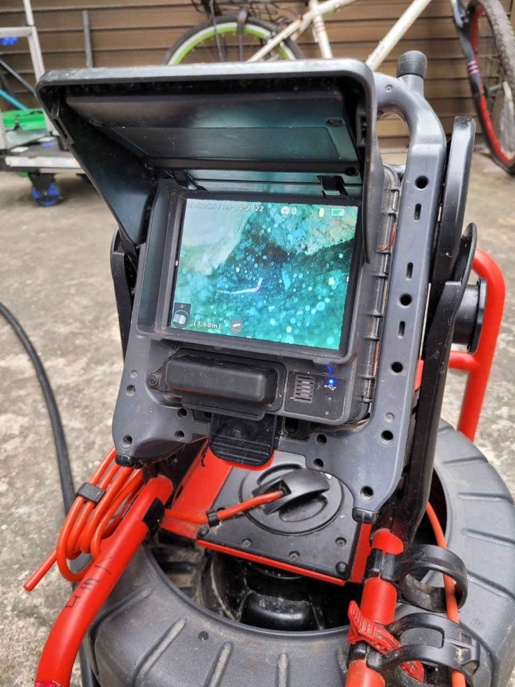
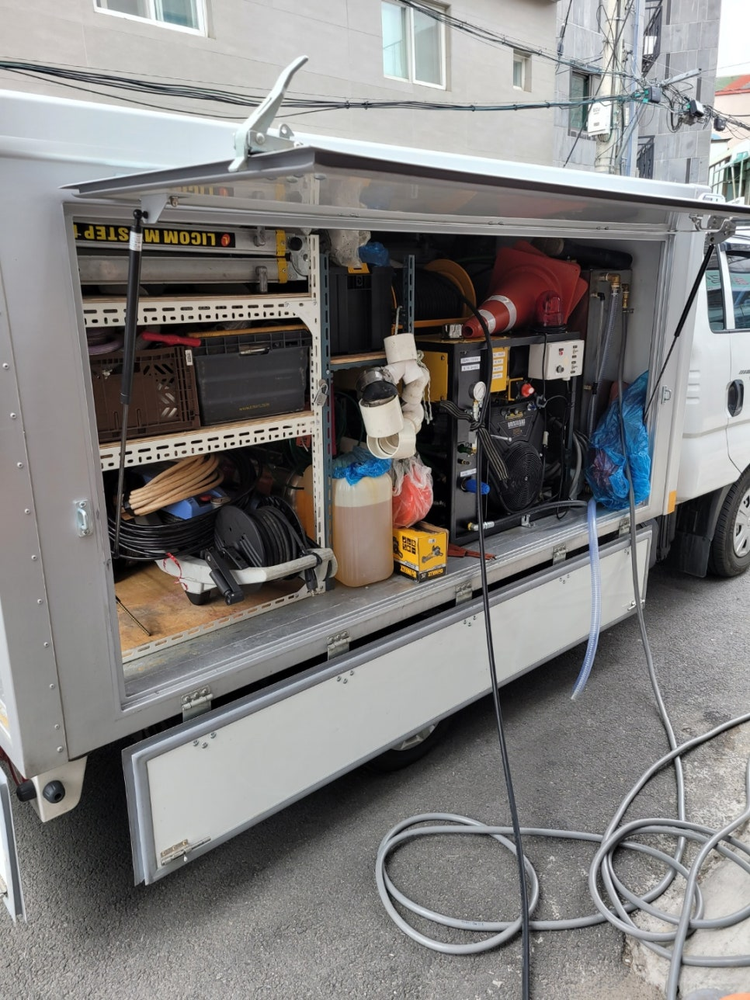
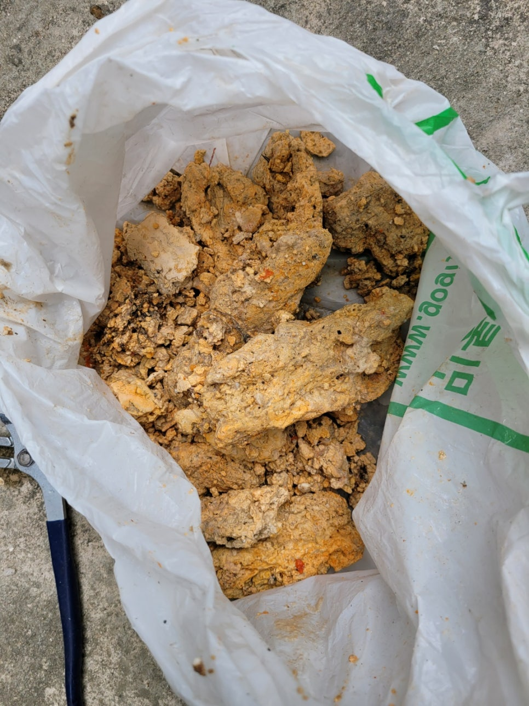

🏠 송탄 하수구 막힘 서정동 신장동 하수구 청소 석회 제거 작업 현장을 소개합니다!
오산 신장동 하수구막힘 전문 시공 후기

📋 작업 개요
- 위치: 오산 신장동, 신장동, 오산
- 서비스 유형: 하수구막힘, 배관막힘, 배관청소
- 작업 일시: 2022. 4. 21. 17:53
- 업체명: 하수구수사대 (010-5615-2118)
🔍 문제 상황
송탄 하수구 막힘 서정동 신장동 하수구 청소
우리가 매일 물을 사용하는 곳에는
이를 배출할 수 있는 하수구가
꼭 바닥 내부에 자리 잡고 있습니다.
수도에서 깨끗한 물이 나옴에 따라
사용한 물도 처리가 되어야 하기에
배관은 어느 곳이나
자리 잡고 있기 마련인데요.
하지만 막상 사용하면서
한 번쯤은 막힘이 찾아와
불편함을 가져본 적이 있을 만큼
생활 부주의 또는 시간이 지나
이물질이 가득 쌓여 막히는
경우가 생겨납니다.
이번에 찾아 주신 고객님은
송탄 하수구 막힘
서정동 신장동 하수구 청소
작업을 요청해 주셨습니다.
상가 화장실이었던 만큼
일반적인 주거공간보다는
많은 사람들이 이용하는
다중시설 중 하나인데요.
그만큼 막힘이 생겨나면
극심한 상태가 많아
꼭 전문가에게

🔎 원인 분석
💡 전문가 진단: 하수구수사대최신장비보유!1년as 보장!주말,공휴일도 ok!010-2340-2118
의뢰해 주셔야 한답니다.
현장에 방문하여 우선 막힘이 발생된
화장실 내부 배관으로
내시경을 연결해 꼼꼼하게
점검이 진행되었습니다.
특정 이물질이 투입되어
막힌 현상이 아닌 긴 시간 동안
차츰 쌓여버린 이물질이
배관 벽에 석회화되어
단단하게 굳어
물이 배출될 통로가 없는 것을
확인할 수 있었어요.
외부 하수구부터
청소가 필요한 상황이었던 만큼
전문 장비들을 배치하고
본격적으로 배관 벽에 달라붙어
가득 쌓인 석회들을 잘게 부수고
꺼내는 작업이 진행되었는데요.
고객님께서도 세면대에서
먼저 물이 빠르게 배수되지 않아
하수구 문제가 아닌 세면대에서
막힘이 찾아오신 줄로만
생각하셨다고 합니다.
하지만 막상 상가 전체 배수가
이루어지지 못하는 상황까지

🔧 작업 과정
치닫게 되어 전문 업체에
속히 방문을 요청해 주셨습니다.
작업이 외부 배관에서 시작되어
중간중간 내시경으로
현 상황을 점검하며
말끔하게 처리하는 과정으로
이어졌어요.
석회는 긴 시간 동안 배관 벽에
달라붙고 가득 쌓이는 만큼
단단함이 강해 전문 약품을 통해
더 매끄럽게 씻겨 나올 수 있도록
전문적인 작업과정이 필요합니다.
기존에는 내시경만 투입해 보면
물 사용이 발생할 때
이물질이 걸려 나와
내부에 폐수가 빠르게
차오르는 현상을 보였는데요.
하지만 작업이 진행되고
석회를 모두 걷어낸 이후에는
시원하게 배수가 이루어지게
되었습니다.
이처럼 전과 후의 작업 차이가
매우 크게 나타나는 만큼
특히 상가라면 막힘이 찾아온 구간을
정확히 파악하여 작업도
진행이 되어야 한답니다.
모두 걷어낸 석회와 마지막으로
내시경을 투입하여
외부 하수구 배관 벽을 살펴보니
깔끔하게 정리된 모습입니다.
이처럼 평소 주방이나
여러 곳곳에 기름 슬러지나
이물질이 하수구를 타고 내려가며
서로 뒤엉켜 결국 하나의 단단한
석회가 되어버리곤 합니다.
현장도 무사히 신속히 작업이
마칠 수 있었던 것도
하수구는 눈에 보이지 않기에
더욱 전문 장비가 갖춰진 곳을 통해
작업이 진행되어야 해요.


✅ 작업 완료
슬기로운 하수구 생활에서는
다년간 쌓아온 경험과 기술로
빠르게 도움을 전해드리고 있어
언제든 편안히 문의해 주시길 바랍니다.
하수구수사대
최신장비보유!
1년as 보장!
주말,공휴일도 ok!
010-2340-2118
경기도 오산시 오산로160번길 15 201-L16호




⚠️ 하수구 배관 막힘 예방 및 관리 가이드
- ✅ 머리카락, 비닐, 물티슈 등 물에 분해되지 않는 이물질은 하수구 유입을 절대 금지해 주세요.
- ✅ 하수구 거름망을 씌우고 모여진 이물질은 주기적으로 쓰레기통에 바로 비워주셔야 합니다.
- ✅ 배관 노후가 심할 경우 이물질이 더 쉽게 걸리므로 주기적인 배관 세척(고압세척 등)을 권장합니다.
- ✅ 작업 후 1년 이내 재발 시 하수구수사대에서 무상 A/S 보증 서비스를 제공합니다.
💡 핵심 정리
- 확실한 장비 작업(내시경 점검 및 샤프트 스케일링)으로 원인을 뿌리 뽑습니다.
- 작업 후 1년 이내에 동일한 부위 재발 시 100% 무상 A/S 서비스를 보장합니다.
- 서울 · 경기 · 인천 전 지역에 24시간 언제든 긴급 출동할 수 있도록 항시 대기 중입니다.
❓ 자주 묻는 질문 (FAQ)
🚨 오산 신장동 하수구막힘 문제로 고민이신가요?
정확한 원인 진단과 확실한 시공으로 재발 없는 해결을 약속드립니다.
24시간 긴급 출동 | 서울 · 경기 · 인천 전지역 | 1년 내 재발 시 무상 A/S